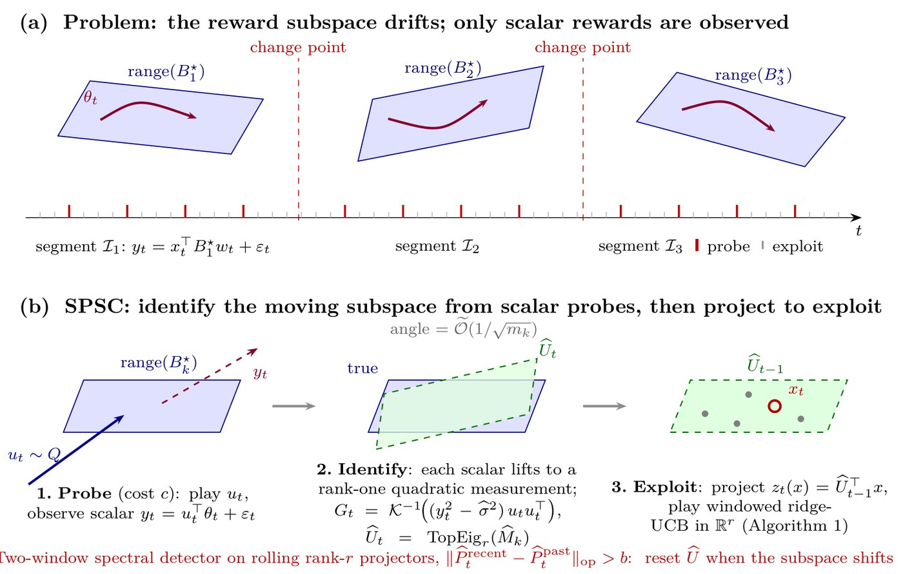

Recommender systems ·
Recommender systems when taste moves
A recommender gets one number back per impression: clicked, or did not. From that it has to work out the shape of what someone likes — while the shape is changing.
A catalogue has far too many dimensions to learn one at a time. The reason recommenders work at all is that taste is not spread across all of them: it is driven by a handful of latent factors, and everything a shopper responds to lives in the low-dimensional space those factors span. Find that space and you are estimating four or five numbers instead of sixty. Miss it and you are estimating sixty.
Two things make finding it hard. The space moves — it drifts, and occasionally turns sharply, at moments nobody announces. And you never observe it directly. You put one item in front of one shopper and get back a single scalar, which is the projection of their whole taste onto that one item, plus noise.
So the recommender runs a loop: probe to generate information it cannot get from serving its best guess, identify the space from the scalars those probes return, then exploit by projecting the catalogue into it and ranking there. Watch it.
The teal line is what the shopper actually likes. The dashed line is what the recommender believes. Every tall red tick on the timeline is a probe: an impression deliberately spent on something other than the best guess, because serving the best guess teaches you almost nothing about the rest of the space.
Each probe returns one scalar. On its own that is almost no information — but squared, it is a rank-one measurement of the space, and enough of them stacked up identify it. The angle closes like 1/√m in the number of probes, which is why the estimate snaps toward the truth quickly at first and then crawls. Turn the noise up and watch the crawl get worse.
Then the green dashed line marks a change point, and everything the recommender knows becomes evidence about a world that is gone. Its errors grow; the detector — a running comparison of the recent estimate against the older one — climbs; and when it crosses b the estimate is thrown away rather than updated. That is the red dot. Rebuilding costs probes, which is why you cannot simply reset constantly, and why the detector has to be right.
Try your own catalogue
The trade is always the same shape: probes cost real impressions now, and buy narrower intervals later. Whether that is worth doing depends on your catalogue, your noise, and — mostly — how often your users change their minds.
The number that decides it is the last row. If your taste structure turns more often than the probing takes to pay for itself, you never get to the part where you profit; you just pay the entry fee repeatedly. That is the regime where a recommender should probably stop pretending it can track the structure and fall back on something cheaper.
The paper
Catching a Moving Subspace makes this precise: when a rotating low-rank subspace can be recovered from single-play scalar rewards at all, how fast, and what the detector has to satisfy for the resets to land near the real change points rather than on noise. The loop above is its Algorithm 1 with the constants taken out.
Catching a Moving Subspace Paper Code
